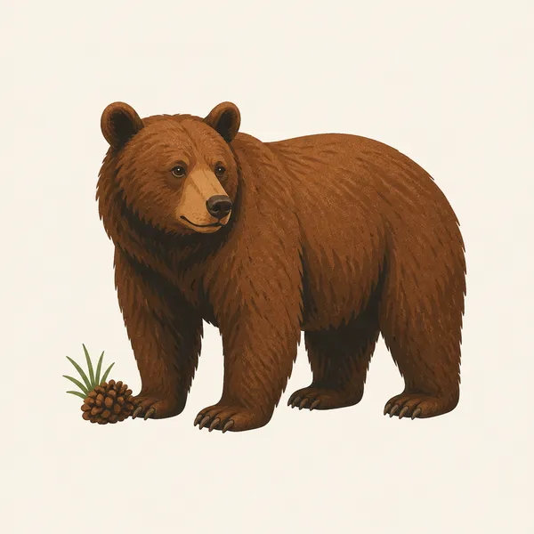
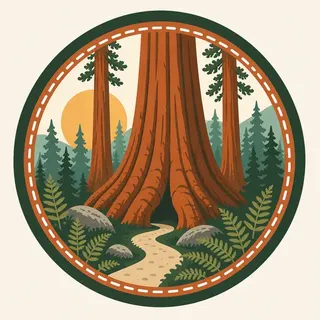

01
The General Sherman Tree
274.9 feet tall, 52,508 cubic feet in volume, about 2,200 years old, and the largest tree on Earth by volume, standing within the Giant Forest grove.
TrailMark Archive Edition
California | Sierra Nevada
President Benjamin Harrison signed it into law September 25, 1890, the second national park in America, and the first created to protect a living organism.
Archive No. TM-SEQU-057
National Park since 1890
Collection Giant Forest
Park Overview
President Benjamin Harrison signed legislation establishing Sequoia National Park on September 25, 1890, the second national park in the country. Only Yellowstone came first, and Sequoia's own history page calls it the first park ever created to protect a living organism.
The joint fact sheet Sequoia shares with neighboring Kings Canyon gives Sequoia's own acreage at 404,064 acres, part of a combined 865,964-acre administration where about 93.3 percent is designated wilderness.
The park's elevation runs from 1,370 feet at the Middle Fork Kaweah River to 14,494 feet at the summit of Mount Whitney, the highest point in the contiguous United States, a spread of more than 13,000 vertical feet within one park.
Emotional Thesis
The header painting sets a giant sequoia trunk filling the frame, ferns and boulders at its base, more trunks receding into misty forest behind it. That composition is close to unavoidable in the Giant Forest: the trees are simply too large to show whole from nearby.
The General Sherman Tree, the park's best-known individual sequoia, stands 274.9 feet tall with a trunk volume of 52,508 cubic feet, roughly 2,200 years old, and remains the largest tree on Earth by volume, though not the tallest or oldest.
Landscape Highlights
01
274.9 feet tall, 52,508 cubic feet in volume, about 2,200 years old, and the largest tree on Earth by volume, standing within the Giant Forest grove.
02
A granite dome climbed by more than 350 steps over a quarter mile, ascending 300 feet to panoramic views of the Great Western Divide and the San Joaquin Valley.
03
A marble cave carved by an underground creek, reached by a steep half-mile trail descending 300 feet before a roughly 50-minute seasonal tour.
Wildlife
The joint Sequoia and Kings Canyon parks record 321 wildlife species, 300 of them native. The extra drawing, a black bear with a pinecone, is the archive's image of the forest floor beneath the giant sequoias, not a census.

01
Black bears are active throughout the park; proper food storage is required at all Giant Forest-area campgrounds and trailheads.
02
The 321-species figure covers both Sequoia and Kings Canyon together, reflecting their joint administration rather than a Sequoia-only count.
03
Elevation extremes, from 1,370 to 14,494 feet, mean the park holds wildlife from foothill chaparral species to high-alpine specialists within a single boundary.
Geology
Sequoia spans Sierra Nevada granite from foothill elevation to the summit of Mount Whitney, with marble solution caves like Crystal Cave carved into isolated formations beneath the forest.
01
Mount Whitney, at 14,494 feet, is the highest point in the contiguous United States, reached from trailheads within the park.
02
Giant sequoias require specific soil and water conditions found on the Sierra's western slope; Giant Forest, at 2,312 acres, is one of the park's major named groves.
03
Crystal Cave's marble formed differently from the granite that dominates most of the park's surface, evidence of a more geologically varied subsurface than the exposed peaks suggest.
The main season for Crystal Cave tours and for climbing routes toward Mount Whitney's summit.
Crystal Cave tours end for the season; Giant Forest trails remain accessible as high-elevation routes begin to close.
Snow closes many high-elevation roads and trails, though Giant Forest's lower groves and Moro Rock remain a winter draw when conditions allow.
Snowmelt swells the Kaweah River; higher trails toward Whitney and the Sierra crest often remain snow-covered.
Photography
Without a reference, a sequoia trunk photographs as an abstract wall of bark. A person, a trail sign, or another visible tree gives the frame the scale the tree actually has.
01
A vertical frame from the base upward can convey height better than a horizontal shot that can only show width.
02
The summit of Moro Rock offers a wide Sierra panorama distinct from the forest-floor views most sequoia photographs favor.
03
This park's subject is the trees and the high Sierra crest above them, not the granite canyon walls that define Kings Canyon next door.
Field Notes
John Muir slept inside a hollowed-out sequoia for a few nights, which is either an eccentricity or the most honest way to understand the tree's scale.
TrailMark Field Notes

Badge Story
The badge fails if the trunk looks like an ordinary large tree. Fluted, buttressed bark filling most of the frame is what conveys General Sherman-scale mass.
Deep red-brown bark against soft green forest haze.
Ferns or boulders at the base for scale, echoing the header painting.
No granite dome silhouette on this mark; that belongs to the Moro Rock highlight, not the badge itself.
Archive No.057
LocationSierra Nevada
ReleaseGiant Forest Mark
Stewardship / Safety
Giant sequoias have shallow, wide root systems easily compacted by foot traffic; Mount Whitney is a genuine high-altitude climb; and black bears are active park-wide.
Stay on trail around sequoia groves; soil compaction from off-trail walking threatens the shallow roots that support these massive trees.
A Mount Whitney summit attempt requires permits, preparation, and altitude awareness; it is a serious mountain, not a casual walk.
Store food properly at every campsite and trailhead; bears throughout the park are conditioned by improperly stored food, not by nature alone.
Crystal Cave requires an advance ticket purchased through the Sequoia Parks Conservancy; it is not available for walk-up entry at the park.
Current conditions, fees, and alerts are on the National Park Service site.
Continue the Archive
Sequoia and Kings Canyon have been administered together since 1940, sharing wildlife counts and a fact sheet even as separate parks. Redwood, in this batch, is the tallest-tree counterpart to Sequoia's largest-by-volume record.